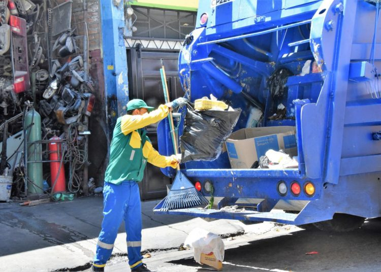

Alcaldía de Santa Tecla impone reserva total a firma de contratos de INTERASEO y TECLASEO

El vencedor de la primera etapa de la Vuelta a España 2018, el australiano Rohan Dennis (BMC),
dijo después de su victoria en la crono individual de 8 kilómetros por el corazón de Málaga
capital, que no le “preocupa perder mañana el maillot rojo” logrado con su triunfo de este
sábado 25 de agosto, al recorrer la distancia en 9.39 minutos.
“No me preocupa. Con todo el respeto, no me importa perder el maillot mañana. Mi objetivos
eran la crono de hoy y la de la etapa 16 -la segunda contrarreloj de la carrera, 32 kms.
llanos entre Santillana del Mar y Torrelavega- y el resto de los días voy a trabajar para
mis compañeros”, aseguró.
“Será un esprint que pica hacia arriba y si pierdo el maillot no estaré triste, estaré
contento”, insistió, avanzando como es la llegada a la subida de Caminito del Rey (3ª).
Dennis no cree que la de hoy sea una buena referencia de cara a lo que pueda dar de sí
en la crono del Campeonato del Mundo, sino que será la de la etapa 16 la que le “dará la
medida” de cómo se encuentra. “A esta habría que alargarla unos kilómetros para saber
si puede ‘petarlo’ en el Mundial”, dijo en tono jocoso.